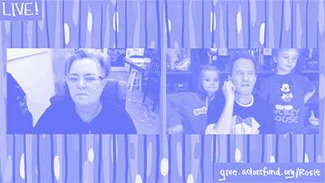

How Theater Lives
A news based archive outlining small and lasting effects COVID-19 will have on the theater industry.
March
1 2 3 4 5 6 7 8 9 10 11“We are highly recommending that all stage door activities be eliminated for the time being,” the Broadway League, a trade organization representing producers and theater owners said on 3/11. Standing at the stage door to meet actors is a long standing tradition in the theater community
A Broadway usher also tested positive for coronavirus. The employee worked recently at “Who’s Afraid of Virginia Woolf?” and “Six,” prompting a scramble to inform the public and clean the theaters..
12On March 12, NY Gov Andrew Cuomo ordered a 30 day ban on events of 500 people+ to slow the spread of COVID-19, effectivly shutting down Broadway theaters for a month. This would be the longest period of time Broadway theaters would be dark.
On the evening of 3/12, SIX was scheduled to open on Broadway and Flying Over Sunset was to begin previews. The Inheritance, and A Soliders Play closed 4 days prior to their scheduled final performances which were Sunday March 15th.
13Many Off-Broadway theaters (500 or less seats) close following the lead of the Broadway theaters. Shutterd theaters are Atlantic Theater Company, The Public, MCC Theater, among others.
14 15Bill de Blasio, Mayor of New York City, has declared that all theaters, concert venues and nightclubs be closed temporarily in response to the COVID-19 pandemic, effective March 17
16"I just feel like it's really needed right now. Ya know, I think this is a really sort of dark and scary time,". "There's nothing like live theater, but when you can't get into a room with a thousand other people, the best thing we can do is watch it online, and create the largest theater in the world."- Tony Winner Laura Benanti launches a viral social media campaign to engage students whose school musicals got cut short.
17 Will Swenson, Marin Ireland, Rachel Dratch & More Launch 24 Hour Plays' Viral Monologues Initiative
Britney Spears Jukebox Musical Once Upon a One More Time Postpones Pre-Broadway Run in Chicago
It was also announced that the Theater World Awards would be postponed to the fall.
18Straining From Shutdowns, Theaters Ask Playwrights to Return Payments
This was also the day I effectively got all my refunds for the shows I had tickets for, during the month.....first time I didn't want a refund. ✔.
19 20“It was announced that Martin McDonagh's Comedy Hangmen would not resume performances following the Broadway shutdown. Hangmen played its final performance on March 11. In total, the production played 13 previews on Broadway.
The Broadway League also announced the cancellation of the 2020 Jimmy Awards due to the ongoing COVID-19 pandemic. The 12th annual celebration of high school talent had been scheduled to take place on June 29 at the Minskoff Theatre.
"We are heartbroken that so many of the 143,000 students who participate in high school musicals across the country will not have an opportunity to show off their hard work, and that 92 nominees won't be able to realize their Broadway dreams this year by performing live on a Broadway stage at the Jimmy Awards in New York City," said Charlotte St. Martin, president of the Broadway League. "Our priority is the health and safety of all. We look forward to next year when we can welcome nominees and fans back to the Big Apple and continue to celebrate the future of Broadway together at the 2021 Jimmy Awards."
21 In addition to Hangmen, it was announced that Who's Afraid of Virginia Woolf?, Starring Laurie Metcalf & Rupert Everett, Will not continue on Broadway after 9 preview performances.
It was also announced that under an agreement between The Broadway League, and 14 labor unions representing a range of workers, from ushers to makeup artists to publicists, most unionized employees will be paid for the week that was cut short by the shutdown, and the following two weeks. For the first, partial, week, they will receive their normal salary, but there is a cap of 150 percent of the minimum salary for their positions as spelled out in labor contracts. For the following two weeks, they will be paid at the contractual minimum, meaning that those who normally earn more than the minimum will see a pay cut for those weeks.
22 The Rosie O’Donnell show returns, with guests in the basement and a bathtub for over 3 hours ; the Broadway superfan schmoozed, fund-raised and gave stars a chance to share their music. The event raised over $600,000, for The Actors Fund. 
23 24 Terrence McNally, Tony-Winning Playwright of Gay Life, Dies at 81. McNally, who died of coronavirus complications, introduced audiences to characters and situations that most mainstream theater had previously shunted into comic asides.
Lincoln Center Theater announced that they have postponed premieres of Flying Over Sunset and Intimate Apparel until the fall.
25 The Tony Awards which were scheduled for June are postponed. The 74th annual ceremony and television broadcast won’t happen until Broadway reopens. How shows will be eligible remains to be determined. The Tony Awards are the biggest advertising the Broadway industry gets each year. 
Roundabout Theater Company announced schedule changes for Caroline, or Change,and Birthday Candles both now scheduled to begin performances this fall on Broadway.
70th Annual Outer Critics Circle Awards also are postponed
26 27 Mark Blum, a familar face Off Broadway, died at 69. He died of coronavirus complications and was also seen on Broadway; in “Crocodile Dundee” and other movies; and on numerous television shows. 
28 Due to the COVID-19 pandemic, New York City Center has announced the cancellation of its spring Encores! staging of Thoroughly Modern Millie. Tony nominee Ashley Park was slated to headline the production, originally scheduled for May 6-10.
29 30 31 35th annual Lucille Lortel Awards Ceremony will be presented online in May. "Our desire to recognize and celebrate the excellence of the off-Broadway season is not diminished by the concerns we are all facing," - Terry Byrne, president of the Off-Broadway League.
The Look Book Goes to Broadway Stars’ Couches
Vulture, April 13 2020
April
1The Chita Rivera Awards are postponed to later this year, from the original May 17th date.
Also, Tony Nominated composer Adam Schlesinger passed away at 52 from COVID-19. At the time of his passing, he was working on, on a new musical with Sarah Silverman, based on the comedian’s memoir, The Bedwetter, at Atlantic Theater Company which was set to premiere this spring.
2 3Signature Theatre Company and MCC Theater postpones their Spring 2020 productions.
Nick Kroll and John Mulaney also launched their podcast, Oh, Hello: the P'dcast, based off of their Broadway show of the same name.
4 5A slew of Broadway stars help donate to feed first responders at Bellevue Hospital. Launched by Celia Keenan-Bolger, Gideon Glick & Victoria Myers' the #BroadwayFeedsBellevue raised $30,000 in the first 24 hours
6A virtual, live reading of Lips Together, Teeth Apart in honor of Terrence Mcnally, starring Jesse Tyler Ferguson, Celia Keenan Bolger, Ari Gaynor and Zachary Quinto, raises over $20,000 for Broadway Cares. 
7How I Learned To Drive, by Paula Vogel, starring Mary Louise Parker and David Morse is postponed at MTC.
The Pulitzer Prize board postponed the announcement of the 2020 Awards to a virtual event on May 4, instead of an in person event on April 20.
Additionally, Williamstown Theatre Festival announced they will produce its summer slate of shows as audio plays on Audible, meaning we'll be able to put the Audra McDonald-Bobby Canavale-Carla Gugino-starring A Streetcar Named Desire directly into our eardrums.
8The Drama Desk Awards will host a virtual ceremony on May 31st, and announced a revised season end date of March 11.
It is also announced that Broadway theaters will remain dark through at least June 7, though likely longer. With over millions of dollars lost across all productions, this also meant that Beetlejuice had their last performance on March 11. The final night before theaters closed.
9 10 11Fancy stars such as Idina Menzel, Bette Midler, Ben Platt, Judith Light, Jason Alexander, among others virtually came together for the Saturday Night Seder (in honor of Passover) benefiting the CDC Foundatation's emergency relief efforts. With still time to donate, $2.9 million has been raised to donate!
It was also announced that Broadway Cares/Equity Fights AIDS canceled a streaming of a concert of Disney songs, from a previous benefit (which was going to be used to raise money again); but had to cancel the program when a union demanded compensation for musicians, even though they were already paid originally.
12 13Wynn Handman, a Revered Acting Teacher, Dies at 97 from COVID-19 complications
It was also announced that the Broadway Cares fundraiser, featuring a concert of Disney songs, had been rescheduled after the musicians union dropped a demand that members be compensated. The new date was April 17.
14The Off-Broadway League announced nominations for the 35th Annual Lucille Lortel Awards, honoring outstanding achievement off-Broadway. The ceremony will take place virtually on May 3. Leading the nominations is Michael R. Jackson's musical A Strange Loop.
15 16On an optimistic note, casting has been announced for an upcoming all female production of, 1776, directed by Diane Paulus. The musical was set to be produced in LA prior to Broadway but has postponed the Los Angeles run. The NY run is still scheduled as planned for next spring.
A Strange Loop, Heroes of the Fourth Turning & more are recognized with New York Drama Critics' Circle Awards. The ceremony will be held digitally on April 28.
Also, The Drama League set their Gratitude Awards & Artistic Awards dates for April 23. Alex Brightman and Leslie Rodriguez Kritzer will Present.
17The Public Theater, which runs Free Shakespeare in the Park, announced that they will be canceling their summer plan of shows. They were to include a new staging of Richard II and a remount of the Public Works musical adaptation of As You Like It (which I was looking forward to seeing). The Public expects an economic loss of $20 million.
New York Theater Workshop also announced that they have concluded their 19/20 season, and have postponed their eagerly anticipated revival of Three Sisters, starring Greta Gerwig and Oscar Isaac to a later date.
18 19 Broadway.com presents a live streamed performance of, Jonathan Tolins' Buyer and Cellar, starring Michael Urie. The streaming raised funds for Broadway Cares' emergency fund, and was presented with Rattlestick Playwright Theater and Pride Plays. The streamed raised $50,000.
20 It was announced that the newly formed online company, Deaf Broadway, will produce a live signing of the shows Into the Woods, and Company in the coming weeks.
A new Theater Communications Groups study estimated $500 Million+ in Not for Profit theatre revenue will lost by June
NYC Mayor Bill De Blasio canceled all
non-essential events through June.
21 22 23 24 25 26 27 28 29 30 31
Showtime, Suspended
The New
York Times,
April 20, 2020
This has been weird. In a community and business where "The Show Must Go On", there is a indefinite period of darkness. There were 16 more commercial shows set to open this spring ahead of awards season, and a slew of Off-Broadway shows beginning- now halted. I'm scared for the industry and this living artform once this pandemic slowly ends. I'm hoping to be able to be back in the theater this year, but who knows at this point.
And, when it returns what will it be like?